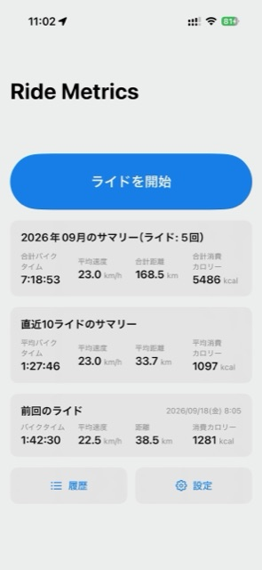
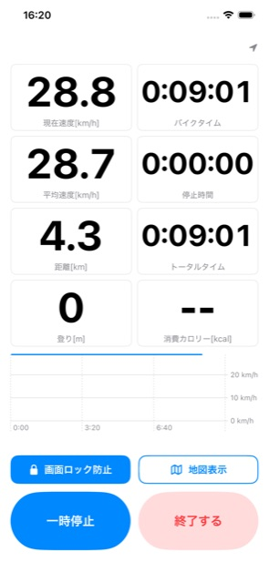
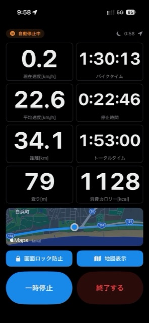
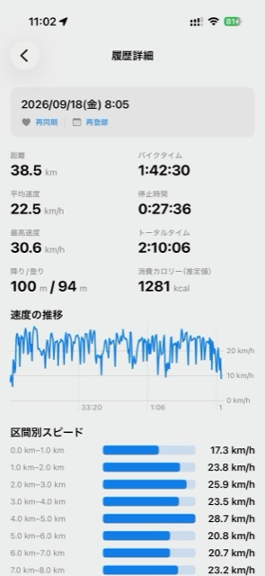

iPhone App
Ride Metrics
自転車ライドの走行ルート・速度・距離・消費カロリーを計測するシンプルなライド計測アプリです。 計測データは端末内に保存され、必要な場合だけヘルスケア・カレンダーと連携します。
Features
走行中も見やすく、走った後は詳しく振り返れます。
ライブ計測
現在速度・平均速度・距離・バイクタイム・停止時間・登り・消費カロリーを大きな文字で表示。走行中でも一目で確認できます。
速度グラフ・地図表示
走行中の速度推移グラフと、現在地・走行ルートを表示する地図表示に切り替えられます。
自動停止判定
信号待ちなどの停止を自動で判定し、バイクタイム・平均速度から除外して計測します。
ライド履歴・統計
ライドごとの詳細（距離・速度・登り/降り・消費カロリー・区間別スピード）に加え、月間サマリー・直近10ライドのサマリーを確認できます。
ヘルスケア・カレンダー連携
任意で有効にすると、ワークアウトをヘルスケアへ保存し、ライド要約をカレンダーへ登録できます。
CSV / GPXエクスポート
計測したライドをCSV・GPX形式で書き出し、他のサービスやアプリへ共有できます。
Screenshots
ホーム、計測中、履歴詳細の画面です。




ダウンロード
現在App Store提出準備中です。公開後、こちらのページからApp StoreリンクとQRコードをご案内します。
準備中